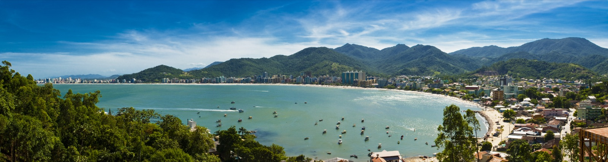
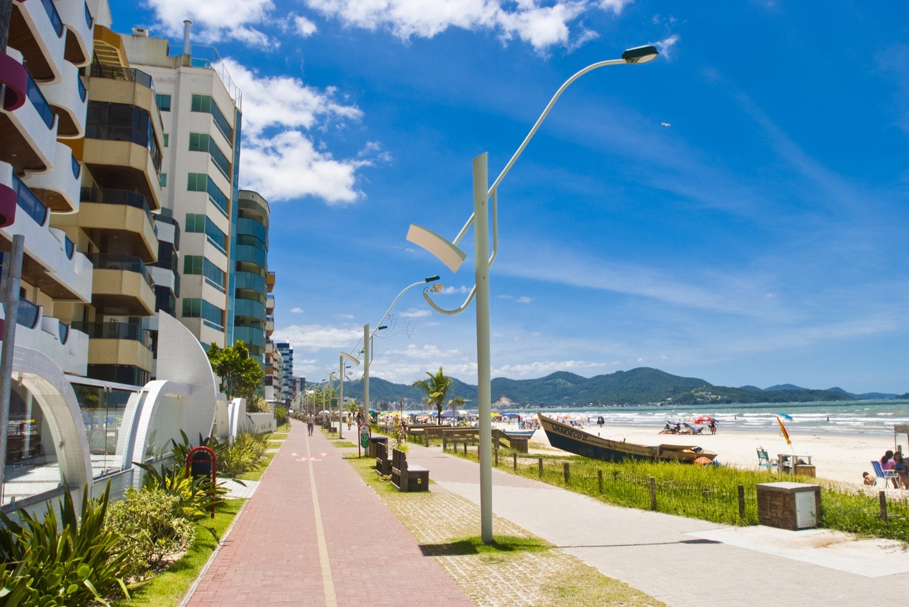

Camada 1 · Santa Catarina
O estado é o argumento de partida de qualquer conversa sobre morar no litoral catarinense. Não por marketing, e sim porque os indicadores nacionais colocam Santa Catarina em primeiro lugar nas duas coisas que mais pesam na decisão de uma família: viver bastante e viver em paz.
Vale registrar o que esses números não dizem. Expectativa de vida alta traz junto o envelhecimento da população, e isso pressiona previdência, saúde e cuidado de longa duração. É uma conta que o estado vai precisar fazer nas próximas décadas.

Camada 2 · Litoral Norte e Vale do Itajaí
Esta é a região que puxa a economia do estado. De um lado, o turismo e a construção civil no litoral. Do outro, a indústria têxtil, a tecnologia e o porto no Vale. As duas coisas se alimentam: quem produz riqueza no Vale compra imóvel na praia, e quem trabalha na praia mora em cidades do Vale.
Brusque, no Vale, aparece como a cidade mais segura do Brasil no ranking nacional, seguida por Jaraguá do Sul e Tubarão. Blumenau combina polo têxtil com investimento em tecnologia. Itajaí concentra a atividade portuária. Não é uma região de vocação única, e é justamente isso que segura o crescimento quando um setor desacelera.
Camada 3 · Costa Esmeralda
Itapema, Porto Belo e Bombinhas formam a Costa Esmeralda, que junto com Balneário Camboriú compõe o trecho mais valorizado do litoral brasileiro. Cada cidade ocupa um lugar diferente nesse tabuleiro.
Duas cidades catarinenses vizinhas ocupando o primeiro e o segundo lugar do metro quadrado nacional é um fato raro no mercado imobiliário brasileiro. Para efeito de comparação, a média de São Paulo e do Rio de Janeiro fica abaixo desses valores.
Camada 4 · Itapema em números
Uma cidade de 58 quilômetros quadrados que abriga hoje mais gente do que muitos municípios com o triplo do tamanho. Entre o Censo de 2022 e a estimativa de 2025, Itapema ganhou aproximadamente dez mil moradores. Esse é o número que explica quase tudo o que acontece aqui: o trânsito, o preço, as obras e a pressão sobre a infraestrutura.
A densidade demográfica passa de 1.300 habitantes por quilômetro quadrado, e o orçamento municipal movimentou mais de R$ 687 milhões em receitas em 2024. É uma cidade pequena em território operando com números de cidade média.

O que está sendo construído agora
Separamos por estágio, sem misturar obra contratada com conversa de mercado.
Em execução ou contratado
- Alargamento da Meia Praia. R$ 60 milhões, divididos entre Prefeitura e Governo do Estado. Licença ambiental de instalação entregue em maio de 2026. Previsão de início em agosto, após o defeso da pesca, com cerca de quatro meses de execução e ganho de 20 a 60 metros de areia em 4,75 quilômetros de orla.
- Programa Avança Itapema. Frentes simultâneas de drenagem, contenção, padronização de calçadas e preparação de vias para pavimentação em vários bairros. No Ilhota, contenção com estacas na margem do rio Mata de Camboriú, próximo à BR-101.
Aprovado, aguardando etapas seguintes
- Financiamento de até R$ 250 milhões. O Projeto de Lei 188/2026 foi aprovado pela Câmara e autoriza a Prefeitura a contratar o empréstimo junto à Caixa Econômica Federal, com destino previsto para mobilidade, saúde, educação e urbanização. O texto ainda passa por sanção e por análise do banco.
- Planos de Mobilidade e de Ação Climática. Em tramitação com audiências públicas realizadas ao longo de 2026.
- Orçamento de 2027. Audiência pública da LDO e da LOA marcada para 17 de agosto de 2026, às 18h30, no auditório da Prefeitura. É a chance concreta de a população influenciar as prioridades do ano que vem.
Especulação de mercado, ainda sem confirmação oficial
Circulam na região projeções de valorização imobiliária após o alargamento da praia, baseadas no que aconteceu em Balneário Camboriú depois de obra semelhante. Também se fala em novos lançamentos de alto padrão em Porto Belo. Tratamos isso como expectativa de mercado, e não como fato. Projeção de valorização parte de quem tem interesse em vender. Quando houver documento, licença ou contrato, essa informação sobe para a lista de cima.
Por que turismo e construção civil andam de mãos dadas aqui
O turismo cria a demanda e a construção civil responde a ela. Cada temporada de verão apresenta a região a milhares de pessoas que voltam depois procurando imóvel. Cada prédio entregue amplia a base de gente que consome comércio, serviço e lazer durante o ano inteiro.
O ponto de atenção é conhecido: crescimento vertical rápido pressiona saneamento, drenagem e mobilidade. É por isso que obras de infraestrutura como as que estão em curso importam tanto quanto os lançamentos. Uma cidade que cresce sem tubulação embaixo do chão paga a conta na balneabilidade da praia, que é justamente o produto que ela vende.
Fontes desta página: IBGE (Cidades e Estados, Censo 2022, estimativa 2025, PIB municipal, tábua de expectativa de vida), Índice FipeZAP, PNUD e Atlas do Desenvolvimento Humano, IPS Brasil 2026, Anuário Cidades Mais Seguras do Brasil 2025, Governo de Santa Catarina, Instituto do Meio Ambiente de Santa Catarina, Prefeitura de Itapema, Câmara de Vereadores de Itapema, Prefeitura de Porto Belo e Diário Oficial dos Municípios de Santa Catarina.